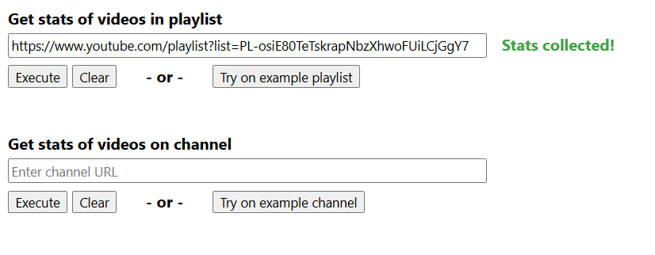

I'm a full stack developer with a passion for building responsive, accessible web applications. I’m currently exploring new opportunities — especially those involving data-heavy challenges and impactful user experiences.
When not coding, I love playing soccer, cooking and exploring new cafes in the city.
Projects
Ontario Hydro Plan Comparison
Flask | Python | Pandas | SQLite | JavaScript | Plotly Charting Library

Overview
A full-stack web app that helps Ontario residents compare electricity plans using their real usage data. Users upload their Green Button XML files, and the app processes the data with Pandas and displays cost breakdowns and trends using Plotly.Project motivation
This started as a personal curiosity after a friend asked: "Which of the three electricity plans would save me the most money?" The answer wasn’t obvious, as the prices depends on both usage and when usage happened, so I built this tool to visualize the cost across plans. While I found little difference for myself, my friend discovered a more cost-effective option and was happy to switched plans (due to charging their car at night 😉).

Overview
A tool for collecting statistics from YouTube channels or playlists. Simply paste a YouTube URL, and the app fetches video data using the YouTube API, organizing it into a downloadable CSV — perfect for visualization exercises or machine learning datasets.
Project motivation
While working on a data visualization project for a course, I needed stats from a playlist with hundreds of YouTube videos. Finding no tool to automate this process, and faced with the possibility of having to work on a different playlist again in the future, I resorted to create this app to skip all that headache.